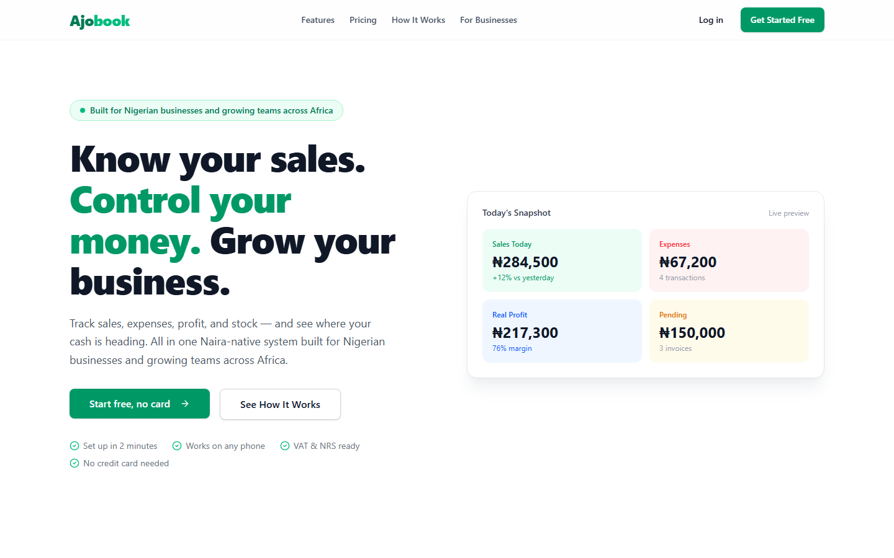

Pilot with a real business
A hospitality business's January to September statements from two bank accounts, imported and reconciled to the kobo, with its stock sheets and 24 staff: 5,902 journal entries and 571 sales.
Case study · 01 of 04
Accounting software priced in naira for small Nigerian businesses that run on Excel today. I founded it and built all of it. In a pilot with a hospitality business, I imported nine months of its bank statements from two accounts and reconciled them to the kobo.

The problem
Lounges and shops track sales, stock and cash in Excel. Owners need real books, Nigerian tax (VAT, PAYE), and proof that staff cannot quietly change a record and keep the cash.
What I built
Owners drop in workbooks, stock sheets and bank-statement PDFs and confirm them. Every sale, payment and stock count posts to a double-entry journal in PostgreSQL through database triggers, and every change by a person is kept.
A hospitality business's January to September statements from two bank accounts, imported and reconciled to the kobo, with its stock sheets and 24 staff: 5,902 journal entries and 571 sales.
Staff can add records but never edit or delete them. Enforced with PostgreSQL row-level security on 49 of 49 tables, plus per-shift cash handover and a morning email to the owner.
A 5,913-line bank statement books in 9 seconds and undoes in 1.3. The owner dashboard loads in 0.1 to 0.3 seconds on 25,000 entries.
Architecture